Sobre Nós
O LEVAP é um laboratório especializado em espectroscopia Raman e de IR, com foco em variação de temperatura e pressão. Fazemos parte do Grupo de Espectroscopia Eletrônica e Vibracional (GEEV), do Departamento de Física da Universidade Federal do Pará (UFPA).
Aqui você encontrará detalhes sobre os equipamentos que compõem a nossa infraestrutura, informações para contato e agendamento de análises de espectroscopias Raman e IR, além dos softwares utilizados no tratamento de dados.
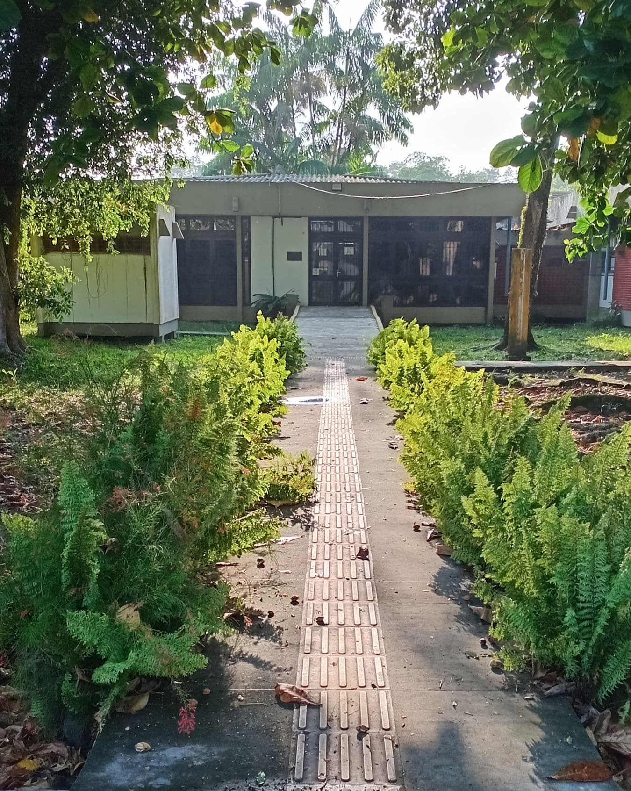
Membros
Responsáveis
Coordenador
Professores
Técnica de Laboratório
Alunos
Alunos de Doutorado
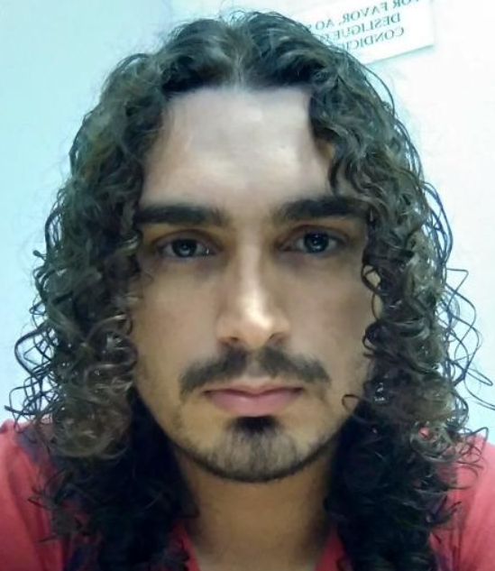
Antônio José Barros dos Santos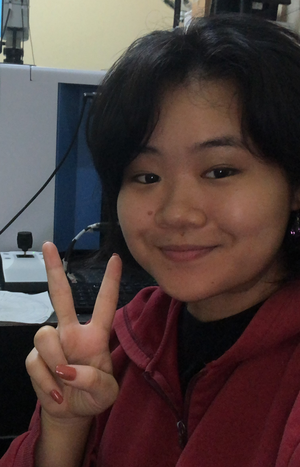
Camile Miho Sei Iuchi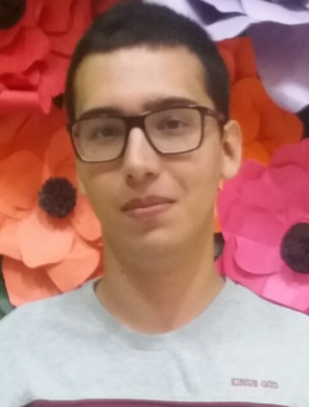
Vítor Rodrigues de Medeiros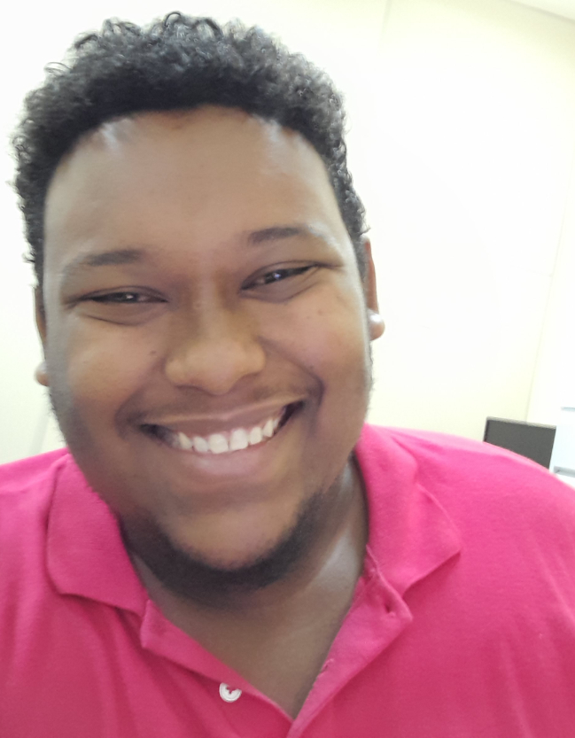
Yuri da Silva BorgesAlunos de Mestrado
Alunos de Iniciação Científica
Voluntários
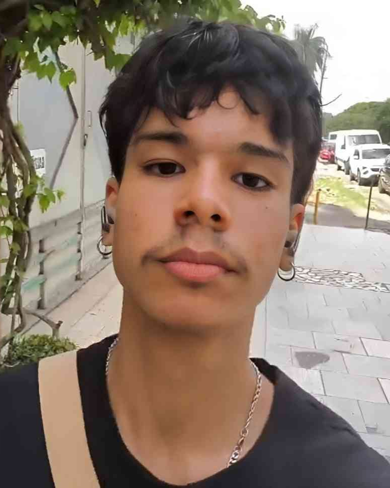
Gabriel Nogueira Caldas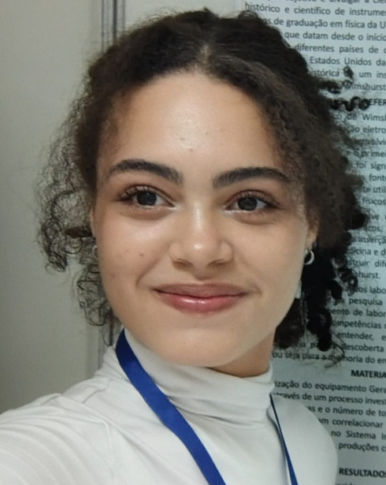
Izadora Cristian Laurindo de Sousa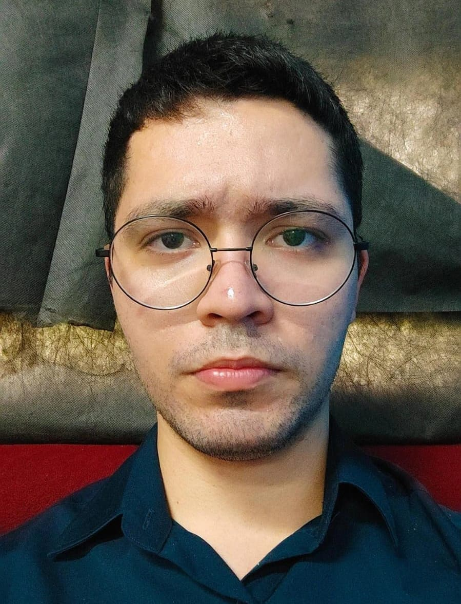
Matheus Henrique Alves de Oliveira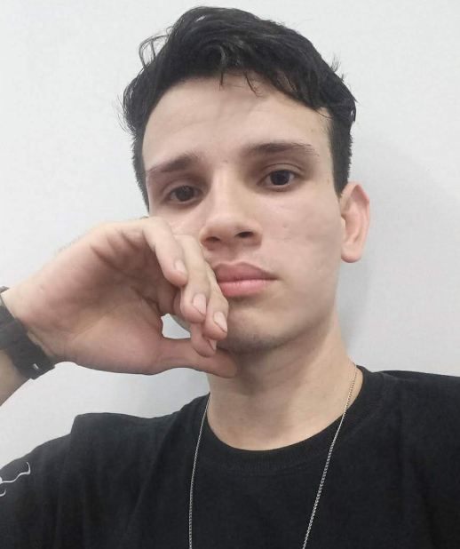
Paulo Felipe Araújo Silva Pedro Henrique Dornelas de Alcântara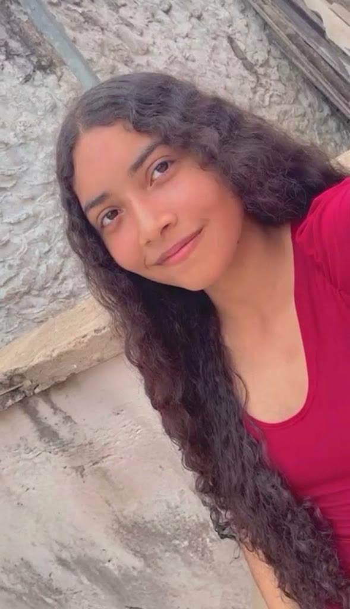
Rosana Vitória Furtado Guimarães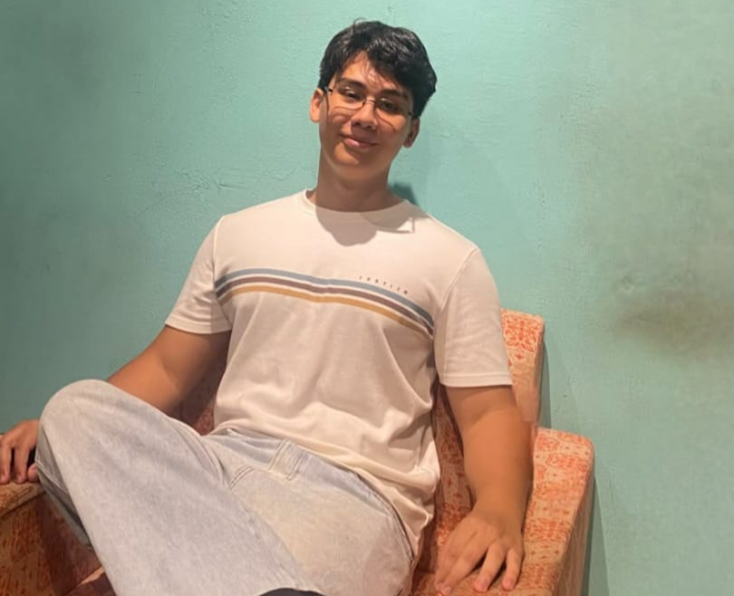
Talles Ryan Figueiredo Ferreira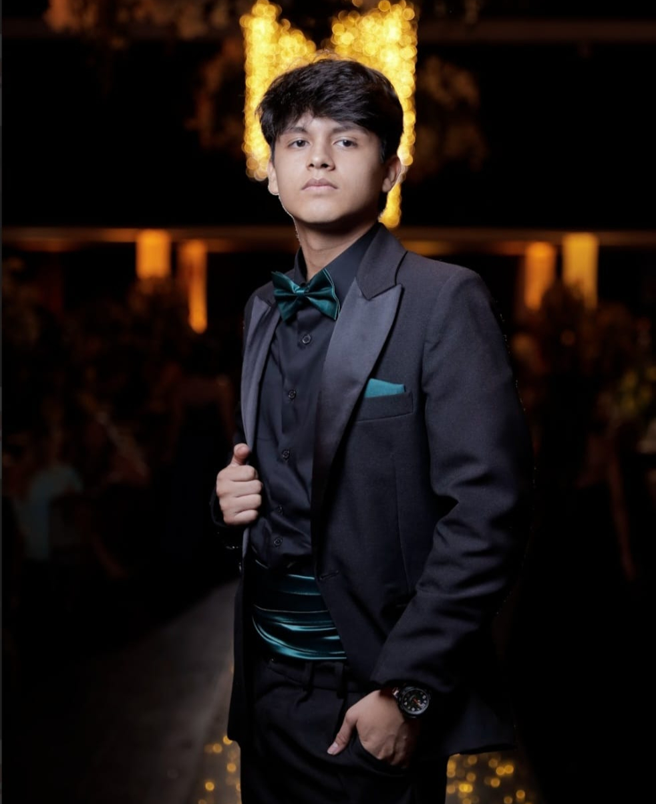
Vítor Manoel Pereira Alves